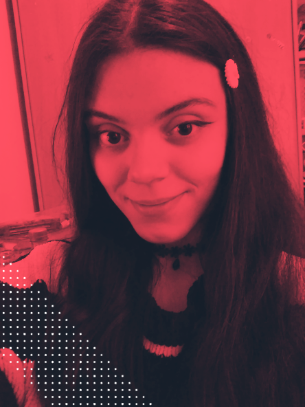
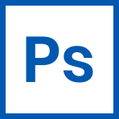
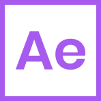
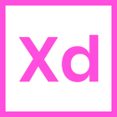

Sobre mí

Mi nombre es Raquel y soy una diseñadora gráfica junior ubicada en Barcelona. He tenido un interés particular por el diseño gráfico desde que me hice con mi primer ordenador, y disfruto tratando de encontrar el punto en el que la buena estética y la funcionalidad se unen, como si de un rompecabezas se tratara. Mi punto fuerte es el diseño limpio y moderno, con especial atención a los pequeños detalles para conseguir una apariencia cuidada.
Otros de mis intereses son el desarrollo web front-end (¡esta página la he creado desde cero!) y el modelaje 3D, pero mi mayor hobby de toda la vida es dibujar.
Programas que manejo
-  Photoshop
 Illustrator
Illustrator- InDesign
- Premiere Pro
-  After Effects
-  XD
Conocimientos de desarrollo web
- HTML
- CSS, SASS
- JavaScript